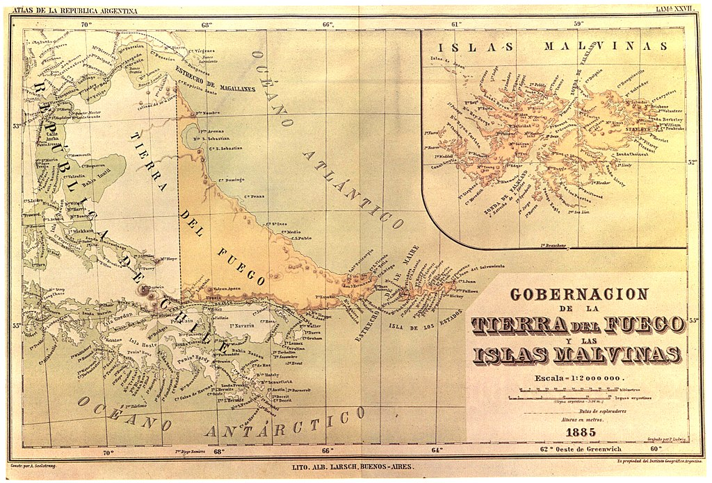
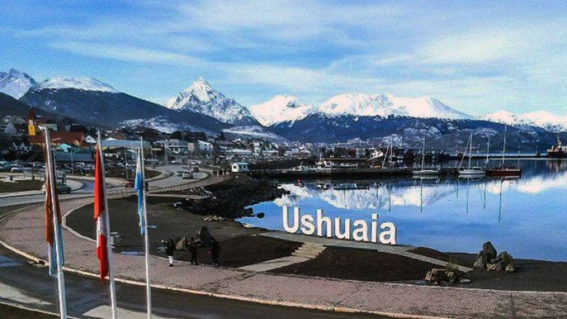

Origen De Tierra Del Fuego
La Provincia de Tierra del Fuego, Antártida e Islas del Atlántico Sur es la más joven de las provincias argentinas. Su historia está formada por la porción argentina de la Isla Grande de Tierra del Fuego y sus islas adyacentes, de las Islas Malvinas, de las Georgias del Sur, de las Sandwich del Sur y de la Antártida Argentina, cuyas trayectorias han divergido significativamente a lo largo de la historia. Las islas Malvinas, Georgias y Sandwich permanecen actualmente bajo administración del Reino Unido de Gran Bretaña e Irlanda del Norte, siendo reclamadas su soberanía por la República Argentina.
El 15 de abril de 1986 el presidente Raúl Alfonsín presentó un proyecto de ley en la Cámara de Diputados, por el cual propiciaba la provincialización del Territorio Nacional sin incluir a las islas reclamadas del Atlántico Sur ni al sector antártico. Ello motivó que la Legislatura fueguina emitiera una resolución el 29 de abril de 1986 pidiendo que la nueva provincia se erigiera incorporando a la misma la totalidad de la actual jurisdicción del territorio nacional de la Tierra del Fuego, Antártida e Islas del Atlántico Sur.
